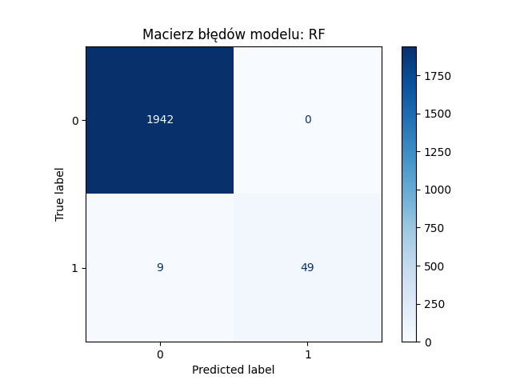

Projekt konkursowy z bootcampu
Symulacja analizy ryzyka kredytowego
1 Zbiór danych
Analizowany zbiór danych jest zbiorem synetycznych danych symulujących ocenę ryzyka kredytowego. Tak się prezentują:
1.1 Analiza zbioru danych
Zbiór danych zawiera 10k pozycji i 16 kolumn zmiennych. Kolumny to kolejno:
[1] "V1" "age" "income"
[4] "children" "credit_history" "overdue_payments"
[7] "active_loans" "years_in_job" "employment_type"
[10] "owns_property" "assets_value" "other_loans"
[13] "education" "city" "marital_status"
[16] "support_indicator" "credit_risk" Przykładowe wartości kolumn z danymi kategorycznymi:
[1] "brak opóźnień" ""
[3] "opóźnienia" "3"
[5] "2" "4"
[7] "dobra historia" "brak historii"
[9] "" "samozatrudnienie"
[11] "stała" "brak"
[13] "określona" ""
[15] "tak" "nie"
[17] "wyższe" "średnie"
[19] "podstawowe" "małe"
[21] "średnie" "duże"
[23] "żonaty/zamężna" "kawaler/panna"
[25] "rozwiedziony/rozwiedziona"1.2 Czyszczenie danych
Aby przygotować zbiór danych do analizy:
usunięto kolumnę indeksów
usunięto napis “złoty” z kolum income i assets value, zamieniono je na numeryczne
w kolumnie children napis “brak” zmieniono na wartość 0, a całą kolumnę - na wartości liczbowe
puste miejsca w kolumnie credit history zamieniono na “brak”, a napisy “dobra historia” skrócono do “dobra”
w kolumnie owns property puste rekordy zamieniono “nie” (czyli założono brak posiadanych nieruchmości)
puste rekordy w assets value ustawiono na 0 (skoro brak danych, to lepiej założyć, że dany klient aktywów nie posiada)
w kolumnie marital status skrócono napisy do M - married, D - divorced, S - single dla ułatwienia pracy z tabelą
wszystkie kolumny zawierające dane kategoryczne sfaktoryzowano
Opracowane dane prezentują sie teraz tak:
1.3 Podstawowe statystyki
“Typowy” klient z bazy prezentuje się nastepująco:
Czyli jest to osoba w średnim wieku, z jednym dzieckiem, średnim wykształceniem, rocznym dochodem średnio wynoszącym 18 879 zł, mieszkająca w małym mieście.
2 Wizualizacje
2.1 Ridge plot
Wykres przedstawia rozkład rocznego przychodu w zależności od typu zatrudnienia danej osoby.
Picking joint bandwidth of 2520
2.2 Boxplot
Wykres przedstawia ponownie rozkład przychodów, ale tym razem - w zależności od wykształcenia.

2.3 Wnioski
Widoczny na wykresach, bardzo zbliżony (a właściwie niemal identyczny) w różnych grupach rozkład zmiennej income sugeruje, że dane - jako zbiór danych synetycznych - są dosyć zbliżone do siebie, bardziej niż w realnym świecie; nie widać tutaj nieomal żadnych różnic pomiędzy osobami o różnym wykształceniu czy nawet w ogóle pracującymi a bezrobotnymi.
3 Modele
Dane opracowane w Rstudio wyeksportowano jako plik csv, następnie zbudowano na nich przykładowy model klasyfikacyjny w JupyterLab oraz regresyjny, korzystając z pythona wewnątrz środowiska Rstudio.
3.1 Regresja liniowa
3.1.1 Dlaczego nie jest odpowiednim wyborem?
Regresja liniowa przewiduje wartości ciągłe, a wartość wynikowa naszego zbioru przyjmuje wartości binarne-0/1. W przypadku zmiennej wynikowej klasyfikacyjnej, model regresji liniowej może zwrócić wartości spoza zakresu [0, 1], np. -0.5 lub 1.5, co nie ma sensu w kontekście klasyfikacji, jak widać poniżej.

Dla problemu klasyfikacyjnego można zastosować model regresji logistycznej, jednak nie radzi on sobie dobrze ze złożonymi relacjami. W związku z tym zastosowane zostały modele takie jak XGBoost, Drzewo Decyzyjne, Las Losowy, naiwny klasyfikator Bayesa i SVM.
3.2 Klasyfikacja binarna
W tej części zbudowano model nadzorowany - klasyfikacyjny, a konkretniej klasyfikacyjny binarny. Zmienna wynikowa to credit_risk z opracowywanego zbioru danych - gdzie wartość 0 oznacza niskie ryzyko, a 1 - wysokie. Tę zmienną przewidywano za pomocą wszystkich innych zmiennych ze zbioru danych. Zbiór testowy liczy 2 000 pozycji.
Ze względu na dużą ilość kolumn z danymi kategorycznymi, przed przystąpieniem do budowy modeli zastosowano one-hot encoding w celu przedstawienia ich jako zmienne binarne.
Tak prezentują się dane po kodowaniu one-hot:
Po tym przekształceniu podzielone zbiór danych na zbiór uczący (80% danych) i testowy (20%).
Zbudowano następujące modele:
DT - drzewo decyzyjne
RF - las losowy drzew decyzyjnych
SVM - maszynę wektorów nośnych
NB - naiwny klasyfikator Bayesa
XGBC - algorytm wzmacniania gradientowego.
W poniższej tabeli przedstawione są miary dopasowań poszczególnych modeli, a dokładniej:
Accuracy (dokładność) - odsetek klientów poprawnie zaklasyfkowanych jako low/high risk
Recall (czułość) - stosunek liczby klientów zaklasyfikowanych jako ryzykownych do tych, którzy rzeczywiście są ryzykowni
Specificity (swoistość) - stosunek poprawnie zaklasyfikowanych klientów niskiego ryzyka do tych, którzy rzeczywiście są low risk
Pozytywne przypadki - klienci ryzykowni (bo to ich szukano)
Negatywne przypadki - klienci niskiego ryzyka (bo nimi nie trzeba się aż tak przejmować)
# A tibble: 5 × 4
Model Accuracy Recall Specificity
<chr> <dbl> <dbl> <dbl>
1 DT 0.99 0.88 0.99
2 RF 1 0.84 1
3 SVM 0.97 0 1
4 NB 0.97 0 1
5 XGBC 0.99 0.83 1 3.2.1 Interpretacja dopasowań
Największe znaczenie w kontekście udzielania kredytu ma tutaj czułość - bo to od niej zależy, czy prawidłowo wykryjemy “niebezpiecznych” klientów i odmówimy im udzielenia pożyczki. Swoistość co prawda ma bardzo wysoką wartość, ale w porównaniu z czułością, nie ma tak wielkiego znaczenia - w przypadku błędnego zaklasyfikowania klienta o niskim ryzyku jako ryzykownego, po prostu nie zostanie mu udzielona pożyczka i bank nie narazi się na potencjalne straty.
Zatem odrzucone powinny zostać modele zbudowane za pomocą maszyny wektorów nośnych i naiwnego klasyfikatora Bayesa.
Macierze błędów prawidłowych modeli prezentują sie następująco:

3.2.1.1
3.2.1.2 Interpretacja macierzy błędów
Drzewo decyzyjne wydaje się tutaj być najbezpieczniejszą dla banku opcją - miało tylko 7 przypadków osób o wysokim ryzyku błędnie zaklasyfikowanych jako osoby niskiego ryzyka, w porównaniu z 9 i 10 w lesie i XGCBoost. Różnice te są jednak niewielkie - wynika to najprawdopodobniej z faktu, że w całym zbiorze danych jest dośc mało klientów wysokiego ryzyka (tylko 58 z 2000).
4 Podsumowanie
Na podstawie przeprowadzonej analizy danych ze zbioru dotyczącego oceny ryzyka kredytowego, wykonano szereg kroków w celu przygotowania danych do analizy i modelowania.
W analizowanym zbiorze danych przedstawiono profil typowego klienta jako osoby w średnim wieku, z 1 dzieckiem i umiarkowanym dochodem. Przeprowadzona analiza wykazała, że dane są dość jednorodne, co odzwierciedlono w wizualizacjach przedstawiających rozkład dochodów w zależności od różnych cech demograficznych.
Po przygotowaniu danych nastąpiła budowa modeli klasyfikacyjnych, w tym drzewa decyzyjnego, lasu losowego, maszyn wektorów nośnych, naiwnego klasyfikatora Bayesa oraz algorytmu XGBoost. Modele te zostały ocenione na podstawie trzech miar: dokładności, czułości oraz swoistości. Największe znaczenie w tym przypadku miała czułość, ponieważ od niej zależało prawidłowe zidentyfikowanie ryzykownych klientów, których należałoby odrzucić przy udzielaniu pożyczek.
Podsumowując, proces analizy, czyszczenia i modelowania danych umożliwił uzyskanie wartościowych wniosków dotyczących potencjalnych ryzyk związanych z udzielaniem kredytów. Pomimo syntetycznego charakteru zbioru danych, przeprowadzona analiza dostarczyła użytecznych informacji o tym, jak poszczególne cechy klientów wpływają na ich ryzyko kredytowe, a także jak różne modele klasyfikacyjne mogą być zastosowane w tym kontekście.